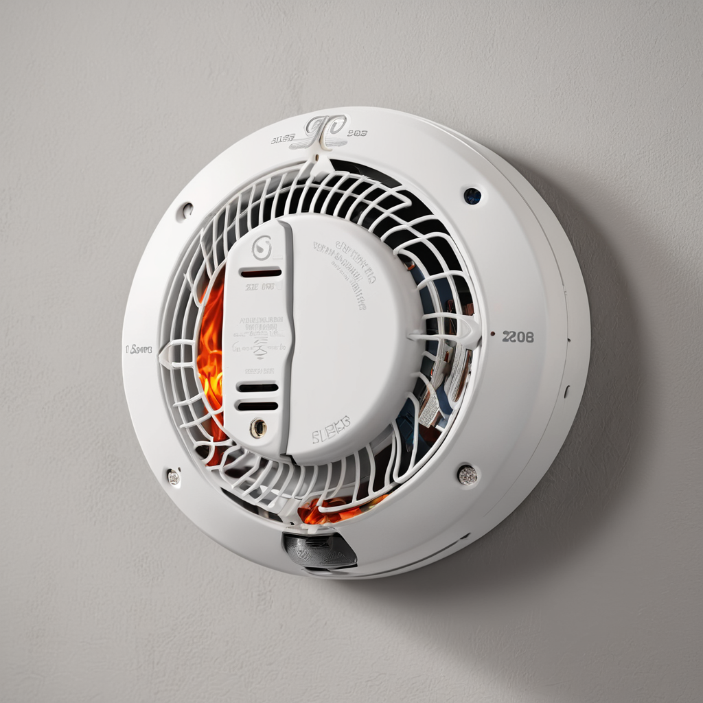
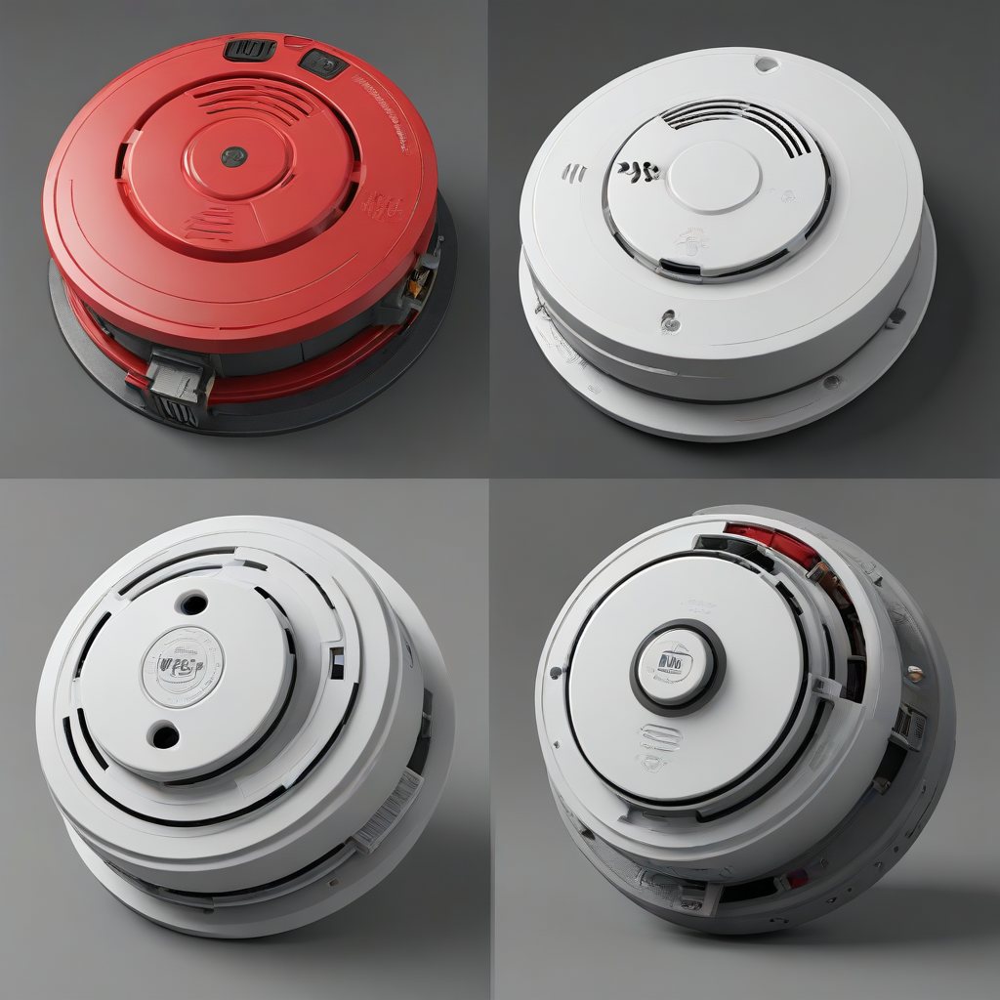
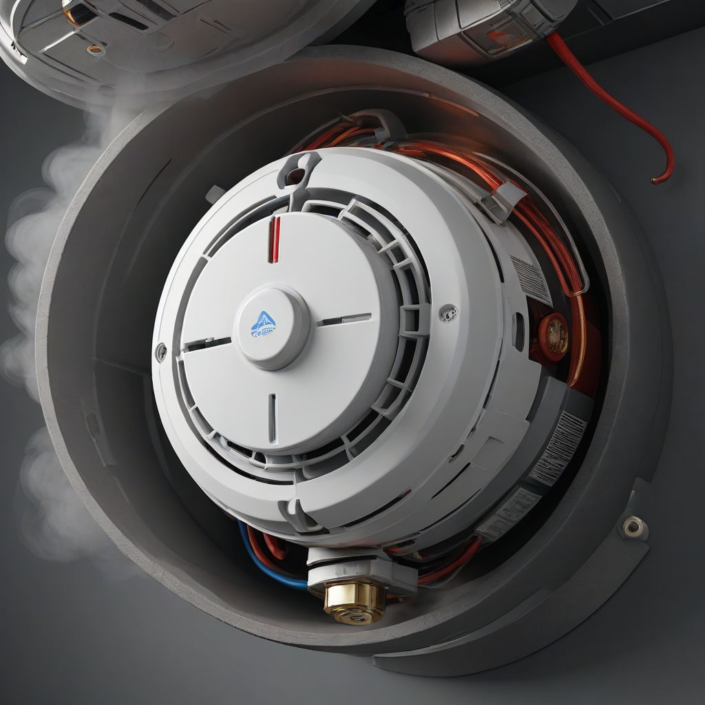

Quick Answer: For most homeowners in 2026, the First Alert On-Link or Kidde Carbon Monoxide + Smoke Alarm offer the best balance of safety, interconnectivity, and value. Always prioritize dual-sensor technology for the best protection against both flaming and smoldering fires, and ensure your units are interconnected so one alarm triggers all.
Home safety is not a single purchase; it is an ecosystem of devices working together to protect your family and property. Among the most critical components of this ecosystem are smoke detectors. While fire safety technology has evolved significantly over the last decade, the fundamental principle remains the same: early detection saves lives. However, the landscape of the best smoke detectors 2026 is more complex than it ever was, with options ranging from basic battery-operated units to smart, Wi-Fi-enabled alarms that integrate with your entire home security system.
Choosing the right device is not just about finding the lowest price point at the hardware store. It involves understanding the type of fire hazards present in your specific living space, the power requirements of your home's electrical system, and the necessary maintenance schedule. Whether you are a renter looking for a non-invasive solution or a homeowner upgrading to a hardwired system, the stakes are high. A malfunctioning detector or a battery that dies unnoticed can turn a manageable incident into a tragedy. This guide cuts through the marketing noise to provide authoritative, actionable advice on selecting, installing, and maintaining the right alarm system for your needs.
As we move through 2026, safety standards have tightened, and technology has become more intuitive. We will explore the critical differences between sensor types, analyze the top-rated models currently on the market, and discuss the importance of interconnectivity. By the end of this guide, you will have a clear roadmap to securing your home against fire hazards without overspending on unnecessary features.
Understanding Smoke Detector Sensor Technology

Not all fires burn the same way, and consequently, not all detectors are equally effective at spotting them. In 2026, understanding the sensor technology inside the unit is the first step toward making an informed purchase. The two primary technologies used in residential settings are ionization and photoelectric sensors, though dual-sensor units are increasingly becoming the standard recommendation.
Ionization Smoke Detectors
Ionization detectors are particularly sensitive to smaller particles created by flaming fires that burn quickly and produce less smoke. These units use a small amount of radioactive material to ionize the air inside a sensing chamber. When smoke enters the chamber, it disrupts the ion flow, triggering the alarm. While excellent for fast-moving fires, they can sometimes be prone to false alarms from cooking smoke or steam in the bathroom. For this reason, they are often recommended for placement in living rooms, dining rooms, or near garages where rapid fires might occur.
Photoelectric Smoke Detectors
Photoelectric detectors utilize a light beam and a sensor. Under normal conditions, the light beam does not touch the sensor. When smoke enters the chamber, it scatters the light, causing it to hit the sensor and trigger the alarm. These are significantly more responsive to smoldering fires, which produce larger smoke particles and burn slowly. Most residential fires start as smoldering incidents in bedrooms or living areas due to electrical faults or overheating electronics. Therefore, photoelectric technology is often cited as the best smoke detector for bedroom safety.
Dual-Sensor Technology
The safest option for the modern home is a dual-sensor smoke detector. These units combine both ionization and photoelectric sensors into a single housing. This redundancy ensures that you are protected regardless of the fire type. While they may cost slightly more upfront, the peace of mind and comprehensive coverage they provide are invaluable. Wh

Power Sources: Hardwired vs. Battery vs. Cellular
Once you have selected the sensor type, you must decide on the power source. The choice between hardwired vs battery smoke detectors depends largely on your housing situation, local building codes, and whether you want smart features.
- Battery-Operated: These are the easiest to install and ideal for renters or older homes without existing wiring. Modern units often come with sealed 10-year lithium batteries, eliminating the need for annual battery changes until the unit reaches the end of its lifespan. However, they rely entirely on the battery, so if it fails, the alarm is dead.
- Hardwired with Battery Backup: These units connect directly to your home's 120-volt electrical system, with a battery backup in case of a power outage. They are often required by code in new construction and renovations. They are more reliable than battery-only units but require professional installation if you do not have existing wiring in the ceiling.
- Wireless Interconnect: Newer technology allows hardwired or battery units to communicate via radio frequency (RF). This means you can install them anywhere without running wires between them, yet they will still all sound together.
- Cellular/Wi-Fi Smart Detectors: These connect to your home network and can send alerts to your phone if you are away from home. This is crucial for vacation homes or for family members with disabilities who may not hear the alarm.
Top Smoke Detector Picks for 2026
After analyzing performance, reliability, and price, we have selected the top contenders for this year. These models represent the best smoke detectors 2026 has to offer across different categories.
First Alert On-Link Smart Smoke Detector
This model stands out as the premier choice for those wanting smart home integration without breaking the bank. It connects to the First Alert app and works with Alexa and Google Assistant.
- Pros: Smart alerts to phone, voice alerts in the room, easy installation, dual-sensor technology.
- Cons: Requires a Wi-Fi connection for smart features, slightly bulkier than standard units.
- Estimated Price: $35 - $45 per unit.
Kidde i9060 Combination Hardwired CO/Smoke Alarm
Kidde remains a titan in the industry, and this hardwired unit is a staple for homeowners requiring code compliance. It features a 10-year sealed lithium battery backup.
- Pros: Hardwired reliability, long battery life, digital display shows power status, hush button to silence nuisance alarms.
- Cons: Installation requires electrical knowledge, cannot be used as a standalone battery unit initially.
- Estimated Price: $45 - $60 per unit.
Nest Protect (2nd Gen)
For the tech-savvy homeowner, the Nest Protect offers unparalleled visibility. It speaks to you, telling you exactly what is wrong ("I'm shutting down" or "Fire detected").
- Pros: Beautiful design, excellent app integration, path of light guides you out of the house, very low false alarm rate.
- Cons: Expensive, requires a bridge (Nest Hub or similar) for some features, subscription for advanced history.
- Estimated Price: $99 - $119 per unit.
Comparison Table: Top Models
| Model | Power Source | Sensor Type | Smart Features | Approx. Price |
|---|---|---|---|---|
| First Alert On-Link | Battery | Dual Sensor | Yes (App/Alexa) | $40 |
| Kidde i9060 | Hardwired + Battery | Dual Sensor | No | $50 |
| Nest Protect | Hardwired + Battery | Dual Sensor | Yes (Google) | $110 |
| Brinks Home Automation | Battery | Dual Sensor | Yes (Brinks App) | $45 |
The Importance of Interconnected Smoke Detectors
One of the biggest oversights in home safety is installing detectors that do not talk to each other. Interconnected smoke detectors are a game-changer for life safety. In a standard setup, if a fire starts in the kitchen, only the kitchen alarm will sound. If you are sleeping in a bedroom on the opposite side of the house, you might not hear it until it is too late.
When detectors are interconnected, a single alarm triggers every unit in the house simultaneously. This ensures that everyone, regardless of where they are, is alerted immediately. In 2026, most new construction codes require interconnection. If you are retrofitting an older home, you have two options: running low-voltage wiring between existing hardwired units or using wireless interconnect technology. Wireless interconnect is often the preferred route for upgrades because it allows you to mix and match battery and hardwired units without opening walls.
When shopping, look for the specific "Interconnect" labeling on the packaging. Not all hardwired units support this feature, and not all wireless units can interconnect with different brands. Stick to one brand for your entire house to ensure compatibility.
Carbon Monoxide Combo Units
Carbon Monoxide (CO) is the silent killer. It is odorless, colorless, and tasteless. While smoke detectors protect you from fire, they do not protect you from CO poisoning caused by faulty heaters, gas stoves, or blocked exhaust pipes. Carbon monoxide combo units streamline your safety setup by housing both sensors in one device.
These combo units are highly recommended for basements, living rooms, and hallways outside sleeping areas. They reduce the visual clutter on your ceilings and ensure that you are monitoring both hazards from the same device. However, be aware of the lifespan. Smoke detectors generally last 10 years, while CO sensors sometimes have a shorter lifespan, around 5 to 7 years. Some modern 2026 models have extended the CO sensor life to match the smoke sensor, but always check the expiration date on the back of the unit. If one sensor expires, the whole unit usually needs replacement.
Do not rely solely on a single combo unit for the entire house. You need dedicated smoke detectors in every bedroom for fire protection, and a CO detector in areas with fuel-burning appliances. Combo units are a supplement, not a replacement for a comprehensive strategy.
Installation and Placement Guide
Even the best detector is useless if it is installed in the wrong location. Follow these expert guidelines for maximum effectiveness:
- Every Bedroom: Install a unit inside every bedroom. This is non-negotiable for sleeping safety.
- Outside Sleeping Areas: Place a unit in the hallway or landing outside the bedrooms.
- Every Level: Every floor of your home, including the basement, should have at least one detector.
- Avoid Dead Air Spaces: Do not install detectors near ceiling fans, vents, or in corners where dust accumulates. Mount them on the ceiling, at least four inches away from walls, or high on the wall, within 12 inches of the ceiling.
- Kitchen Distance: Keep smoke detectors at least 10 feet away from cooking appliances to prevent false alarms from toast or bacon smoke.
- Attics and Crawlspaces: Generally not required in finished living areas, but ensure you check local codes for unfinished spaces.
If you are installing hardwired units, always turn off the power at the breaker box before touching the wiring. If you are unsure about your electrical skills, hire a licensed electrician. Safety is paramount, and a shock hazard during installation defeats the purpose of the device.
Maintenance and Testing Schedule
Buying the alarm is only half the battle. Maintenance is what keeps the system alive. According to the National Fire Protection Association (NFPA), you must test your smoke alarms at least once a month. Press and hold the test button until the alarm sounds. This verifies the electronics and the battery are functioning.
Cleaning is equally important. Over time, dust and insects can clog the sensing chamber, leading to false alarms or failure to detect smoke. Use a vacuum cleaner with a hose attachment to gently vacuum the exterior vents of the detector every six months. Never use liquids or solvents to clean the unit.
Regarding replacement, smoke detectors have an expiration date. The plastic degrades, and the sensors become less sensitive. Most units are rated for 10 years from the date of manufacture. Check the back of the unit for a "Replace By" date. If the unit is past this date, replace it immediately, regardless of whether it still tests successfully. For battery-operated units, change the batteries annually or as soon as the low-battery chirp begins. For 10-year sealed battery units, the entire unit must be replaced when the battery dies.
Frequently Asked Questions
How do I stop a smoke detector from chirping?
The chirping sound indicates a low battery or a unit that has reached its end of life. For battery-operated units, replace the batteries immediately. For sealed 10-year units, the chirp means the battery is dead and the unit must be replaced entirely. If the unit is new and chirping, ensure the battery is seated correctly or the unit is plugged in. Pressing the "Hush" button can silence a nuisance alarm from cooking smoke for 8-15 minutes, but it will not fix a low battery.
Can I mix different brands of smoke alarms?
Generally, no. Most manufacturers design their interconnect systems to work only with their own brand. While you can physically mount different brands on the same wall, they will not communicate. If one sounds, the others will not. For a truly integrated safety system, stick to one brand throughout your home to ensure interconnected smoke detectors function correctly.
Do I really need smart smoke detectors?
Smart smoke detectors offer significant advantages, such as remote alerts and voice announcements, but they are not strictly necessary for basic safety. A standard dual-sensor detector with a loud alarm is sufficient to wake you up and alert neighbors. However, if you travel frequently, have hearing impairments, or want to integrate your safety system with your smart home, the investment in smart units is worthwhile. Check our guide on smart home security integration for more details.
What is the best smoke detector for bedroom safety?
The best smoke detector for bedroom safety is a photoelectric or dual-sensor unit that is interconnected with the rest of the home. Bedrooms are the most dangerous place to be during a fire because smoke can incapacitate you before you wake up. A loud alarm (85 decibels or higher) is essential. Some models also feature strobe lights for the hearing impaired, which is a critical feature for bedrooms.
How often should I replace my smoke detectors?
Smoke detectors should be replaced every 10 years. The sensors degrade over time, making them less effective. Even if the alarm still sounds during a test, the internal components may not detect smoke at the proper threshold. Check the manufacture date on the back of the unit. If you cannot find a date, assume it is old and replace it.
Conclusion
Investing in the best smoke detectors 2026 has to offer is one of the most impactful decisions you can make for your family's safety. There is no single "best" unit for every home, but there is a best unit for your specific needs. Prioritize dual-sensor technology, ensure your units are interconnected, and commit to a rigorous maintenance schedule.
Whether you choose a budget-friendly battery unit or a premium smart detector, the goal is the same: early detection and rapid evacuation. Review the comparison table above, assess your home's layout, and take action today. Do not wait for a fire drill or a holiday to check your equipment. Replace old units, test your batteries, and ensure every sleeping area is protected. Your peace of mind is worth the investment.